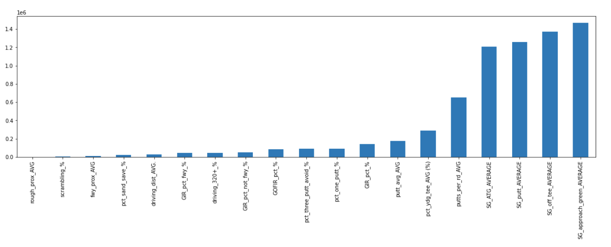

The primary outout of our analysis was the ranked importance of key golf statistics. Leveraging multiple supervised learning models, we were able to isolate a handful of performance statistics that predicted a golfer's success.
Not surprisingly, the Strokes Gained statistics were clearly the highest performers in our models. These statistics evaluate a goler's performance relative to the average of the field. In a competitive setting, outperforming your competition will obviously lead to imporved results.
When ranking each of these statitsics, the Strokes Gained - Approach the Green rose above the rest. This is a measure of a golfer's relative performance when they approaching the green from a distance greater than 50 yards, a component of the golf game that is pivotal to their overall success - a good shot results in an easy putt while a bad shot lands in a hazard, possibly costing them multiple strokes.
